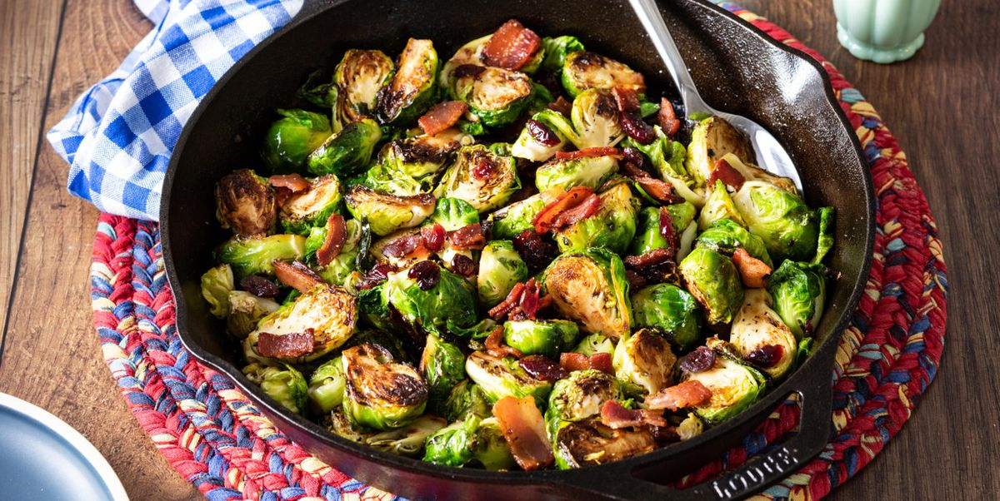

Maple Roasted Brussels Sprouts with Bacon

Brussels sprouts with bacon are roasted in a mixture of maple syrup and olive oil, resulting in a crispy, caramelized side dish that's quick and easy to make and perfect for weeknight dinners. The Brussels sprouts take on a nutty flavor during the roasting process, and the salty bacon is a delightful contrast with the sweet maple syrup — who knew Brussels sprouts with bacon could ever taste this good?
Ingredients
- 1 pound whole Brussels sprouts
- 4 slices bacon, cut into 1/2-inch pieces
- ½ teaspoon salt
- ¼ teaspoon freshly ground black pepper
- ¼ cup extra-virgin olive oil
- 3 tablespoons pure maple syrup
Directions
- Gather all ingredients. Preheat the oven to 400 degrees F (200 degrees C). Line a rimmed baking sheet with aluminum foil.
- Trim ends off Brussels sprouts and cut any large ones in half. Transfer to a large bowl.
- Add bacon, salt, and pepper to the Brussels spouts. Drizzle olive oil and maple syrup over top and toss until sprouts are well coated.
- Transfer to the prepared baking sheet and spread in a single layer.
- Roast in the preheated oven until bacon is crispy and Brussels sprouts are caramelized, 20 to 30 minutes, stirring halfway through.
- Serve warm and enjoy!